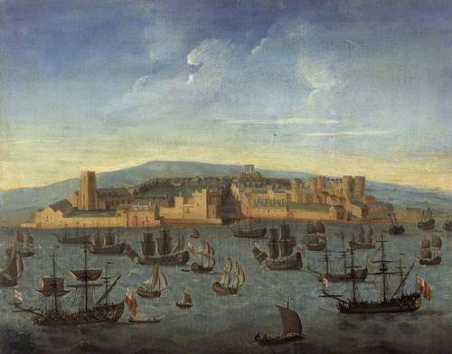
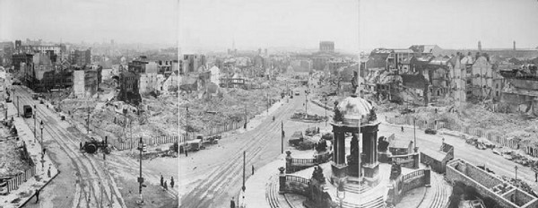
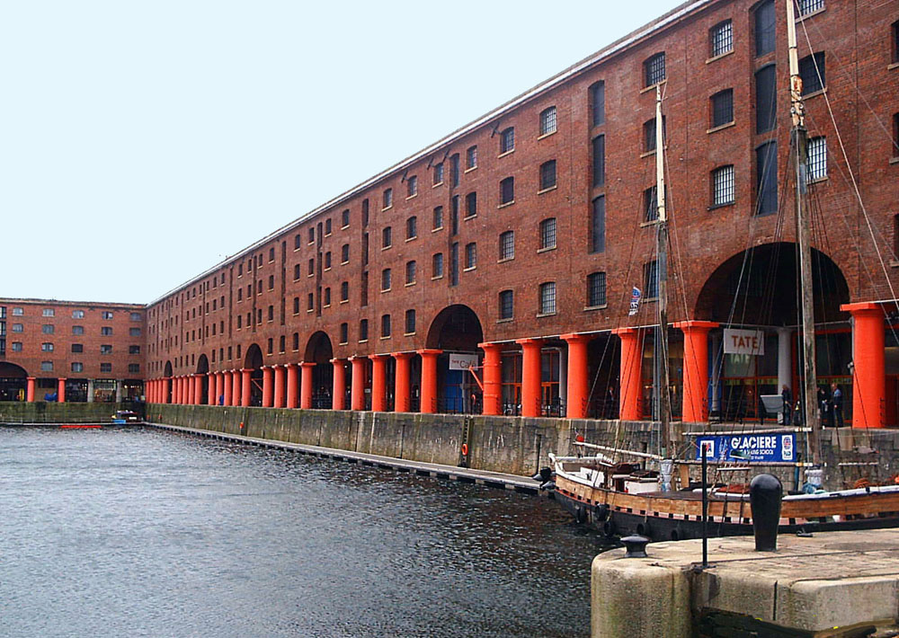
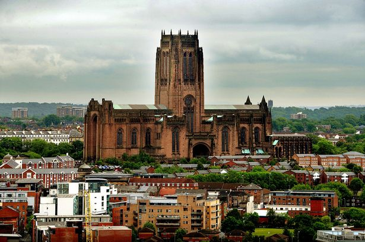
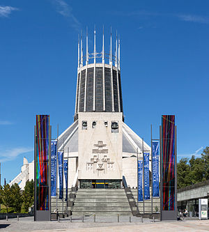
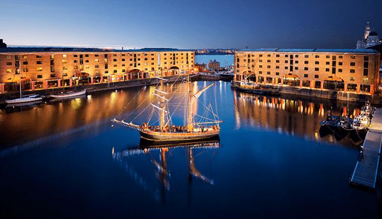

Geschiedenis
De stad werd gesticht in 1207 als een klein stadje en tegen het midden van 16e eeuw had Liverpool een bevolking van ongeveer 500 mensen. Door de ontwikkeling van de handel in de 17e eeuw groeide de bevolking flink. Toen Liverpool het grootste deel van de handel met West-Indië, Ierland en Europa voor haar rekening nam begon de stad pas echt te groeien. Het eerste commerciële dok werd in 1715 in Liverpool gebouwd
Tijdens de Tweede Wereldoorlog werd de stad blootgesteld aan een reeks luchtaanvallen, die duizenden huizen verwoestten. In de jaren 1960 stond Liverpool in het middelpunt van de wereld dankzij de Beatles en de nieuwe "Merseybeat sound”. In 1974 werd Liverpool de centrumstad binnen het grootstedelijk gebied Merseyside.
Cultuur
Tijdens de jaren zestig was Liverpool de hoofdstad van de Merseybeat. Naast The Beatles heeft Liverpool ook één van de oudste orkesten, het Royal Liverpool Philharmonic Orchestra, voortgebracht

Liverpool heeft naast Londen de meeste galerieën en musea. Het National Museums Liverpool is de enige Engelse collectie die zich volledig buiten Londen bevindt. Tate Liverpool was tot de opening van Tate Modern in Londen de grootste tentoonstellingsruimte voor moderne kunst in heel het Verenigd Koninkrijk.
Bezienswaardigheden
Anglican Cathedral
Deze prachtige kathedraal van Liverpool is gebouwd in het begin van de twintigste eeuw. Er is maar liefst 74 jaar gebouwd om het te maken zoals het nu is. De heren Giles Gilbert Scott en George Bodley werden na hun ingediende ontwerp benoemd tot de architecten die leiding mochten geven in 1904 bij het leggen van de eerste stenen en het verder bouwen van deze kathedraal. In de kathedraal is een giftshop, restaurant en uitkijktoren.
Liverpool Town Hall
Een van de mooiste historische gebouwen in Liverpool is toch zeker het stadhuis. Je vindt dit vorstelijke gebouw in High Street. Delen van het pand worden voor verschillende doeleinden gebruikt. Zo is er beneden de Raad kamer van de stad, er is een zaal voor bruiloften en er zijn kamers opgesteld voor publiek die tijdens een rondleiding getoond worden. Voor het stadhuis staat het Nelson monument wat er ter ere van admiraal Horatio Nelson is geplaatst. Horatio Nelson is was een zeer invloedrijk persoon die vele succesvolle oorlogen op zijn naam heeft staan.

Metropolitan Cathedral
Sinds 1962 is er vijf jaar gebouwd aan deze zeer bijzonder vormgegeven rooms-katholieke kathedraal van Liverpool. De architect Fredrick Gibberd is verantwoordelijk voor dit prachtig stukje kerkelijk design. De binnenkant is zeker zo modern als de buitenkant laat zien. Het is samen met de Anglican Cathedral een grote trekpleister voor toeristen.
Albert Dock
In dit pakhuis gedeelte van Liverpool waar voorheen veel handel werd gedreven, bloeit nu op als een heuse toeristische trekpleister. Zo vind je hier het Tate Liverpool Museum, het Merseyside Maritiem Museum, de Beatles Story en een aantal monumentale gebouwen. Dit nieuwe, hippe gedeelte van de stad heeft intussen een aantal even hippe restaurants en andere horecagelegenheden verworven.
Aanraders
Wanneer je opzoek bent naar een goedkoop hotel met in de buurt voldoende opties om te eten kun je je inchecken bij het low budget ‘Hatters Hostel’. Een fijne centraal gelegen plek die je alle basic ingredienten biedt, die je nodig hebt voor een stedentrip.
In een van de leukste wijken van Liverpool vind je Bold Street. Het zo’n wijk waar oude vervallen panden worden omgetoverd in een hippe winkel, bar of restaurant.
Het ‘Indian’ restaurant Mowgli is hier zo’n voorbeeld van.Het is een mooi en modern ingericht restaurant zonder het het aan sfeer inleverd. Door de natuurlijke materialen is de sfeer perfect. Maar belangrijker nog. Het eten is top!